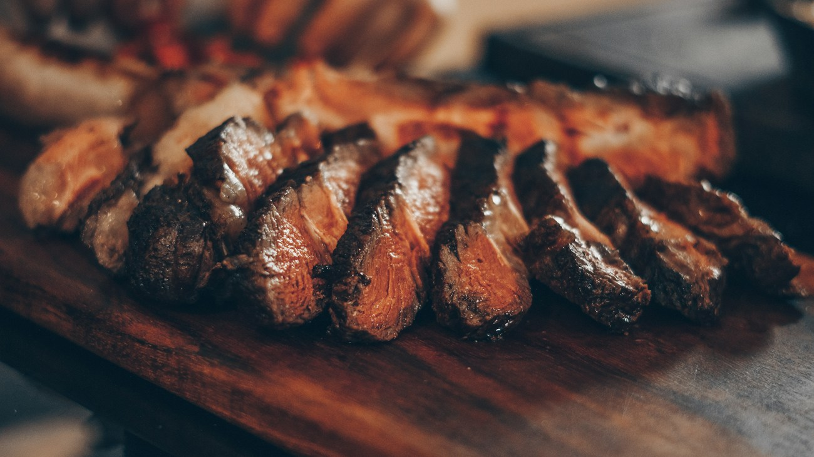

<!doctype html><html lang="zh-Hant"><meta charset="utf-8"><meta name="viewport" content="width=device-width,initial-scale=1"><title>炭市肉舖｜肉品選集</title><link rel="stylesheet" href="assets/theme.css"><link rel="stylesheet" href="assets/preview.css">
<header class="mast"><a class="identity" href="./"><b>炭</b><strong>炭市肉舖</strong><small>SUMI MARKET</small></a><nav class="menu"><a href="#products">全部商品</a><a href="#about">關於我們</a></nav></header>
<button class="bag-toggle" id="bag" aria-controls="basket">購物袋 <span id="count">0</span></button>
<main><section class="campaign"><div class="copy"><h1>厚切牛排，<br>今晚的主角。</h1><p>厚切牛排・雙人燒肉・快速料理</p><a href="#products">選購本週肉品</a></div><span class="watermark" aria-hidden="true">SUMI MARKET</span></section>
<section class="catalog" id="products"><div class="section-heading"><h2>本週選肉</h2><p lang="en">Recommended Items</p></div><div id="grid"></div></section><section id="about" class="catalog"><h2>關於炭市肉舖</h2><p>從一片厚切牛排，到兩人共享的燒肉組合，挑選今晚的主菜。</p></section></main>
<footer class="site-footer"><strong>炭市肉舖</strong><span>公開展示版・模擬購物，不產生訂單或扣款</span></footer><dialog id="basket"><button id="close" autofocus>關閉</button><h2>模擬購物袋</h2><div id="lines"></div><p id="total"></p><small>本頁僅供體驗，無實際交易。</small></dialog><script src="assets/shop.js"></script></html>
